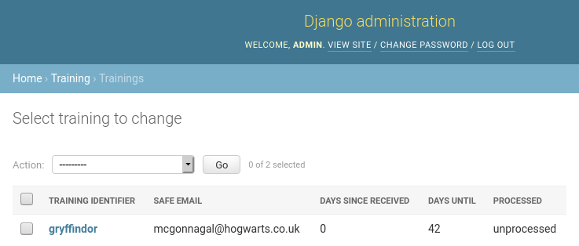

Training Infrastructure as a Service (TIaaS)

 Helena Rasche
Helena Rasche Saskia Hiltemann
Saskia Hiltemann
OverviewQuestions:
Objectives:
How to deploy EU’s TIaaS
Requirements:
Setup TIaaS
Request and manage trainings
Join a training
- Galaxy Server administration
- Ansible: slides slides - tutorial hands-on
- Galaxy Installation with Ansible: slides slides - tutorial hands-on
- Connecting Galaxy to a compute cluster: slides slides - tutorial hands-on
- Mapping Jobs to Destinations: tutorial hands-on
- Running Jobs on Remote Resources with Pulsar: slides slides - tutorial hands-on
Time estimation: 30 minutesSupporting Materials:Last modification: Mar 27, 2023
Galaxy is widely used for teaching. In order to facilitate instructors, the Galaxy Project has developed Training Infrastructure as a Service (TIaaS). Workshop instructors can apply for TIaaS, and on the day of their workshop, their participants will be placed in a special group and use dedicated resources, thus reducing queue times on the day of the training.
This tutorial will go cover how to set up such a service on your own Galaxy server.
Agenda
Comment: Galaxy Admin Training PathThe yearly Galaxy Admin Training follows a specific ordering of tutorials. Use this timeline to help keep track of where you are in Galaxy Admin Training.
Setting up TIaaS
Hands-on: Setup TIaaS
In your
requirements.ymladd the TIaaS ansible role:--- a/requirements.yml +++ b/requirements.yml @@ -36,3 +36,5 @@ version: 0.14.2 - src: dj-wasabi.telegraf version: 0.12.0 +- src: galaxyproject.tiaas2 + version: 2.1.3And run the install step:
Input: Bashansible-galaxy install -p roles -r requirements.ymlIf you haven’t worked with diffs before, this can be something quite new or different.
If we have two files, let’s say a grocery list, in two files. We’ll call them ‘a’ and ‘b’.
Input: Old$ cat old
üçé
üçê
üçä
üçã
üçí
ü•ëOutput: New$ cat new
üçé
üçê
üçä
üçã
üçç
ü•ëWe can see that they have some different entries. We‚Äôve removed üçí because they‚Äôre awful, and replaced them with an üçç
Diff lets us compare these files
$ diff old new
5c5
< üçí
---
> üççHere we see that üçí is only in a, and üçç is only in b. But otherwise the files are identical.
There are a couple different formats to diffs, one is the ‘unified diff’
$ diff -U2 old new
--- old 2022-02-16 14:06:19.697132568 +0100
+++ new 2022-02-16 14:06:36.340962616 +0100
@@ -3,4 +3,4 @@
üçä
üçã
-üçí
+üçç
ü•ëThis is basically what you see in the training materials which gives you a lot of context about the changes:
--- oldis the ‘old’ file in our view+++ newis the ‘new’ file- @@ these lines tell us where the change occurs and how many lines are added or removed.
- Lines starting with a - are removed from our ‘new’ file
- Lines with a + have been added.
So when you go to apply these diffs to your files in the training:
- Ignore the header
- Remove lines starting with - from your file
- Add lines starting with + to your file
The other lines (üçä/üçã and ü•ë) above just provide ‚Äúcontext‚Äù, they help you know where a change belongs in a file, but should not be edited when you‚Äôre making the above change. Given the above diff, you would find a line with a üçí, and replace it with a üçç
Added & Removed Lines
Removals are very easy to spot, we just have removed lines
--- old 2022-02-16 14:06:19.697132568 +0100
+++ new 2022-02-16 14:10:14.370722802 +0100
@@ -4,3 +4,2 @@
üçã
üçí
-ü•ëAnd additions likewise are very easy, just add a new line, between the other lines in your file.
--- old 2022-02-16 14:06:19.697132568 +0100
+++ new 2022-02-16 14:11:11.422135393 +0100
@@ -1,3 +1,4 @@
üçé
+üçç
üçê
üçäCompletely new files
Completely new files look a bit different, there the “old” file is
/dev/null, the empty file in a Linux machine.$ diff -U2 /dev/null old
--- /dev/null 2022-02-15 11:47:16.100000270 +0100
+++ old 2022-02-16 14:06:19.697132568 +0100
@@ -0,0 +1,6 @@
+üçé
+üçê
+üçä
+üçã
+üçí
+ü•ëAnd removed files are similar, except with the new file being /dev/null
--- old 2022-02-16 14:06:19.697132568 +0100
+++ /dev/null 2022-02-15 11:47:16.100000270 +0100
@@ -1,6 +0,0 @@
-üçé
-üçê
-üçä
-üçã
-üçí
-ü•ëIn your
galaxyserversgroup variables file, add the following:--- a/group_vars/galaxyservers.yml +++ b/group_vars/galaxyservers.yml @@ -243,6 +243,11 @@ telegraf_plugins_extra: - data_format = "influx" - interval = "15s" +# TIaaS setup +tiaas_dir: /srv/tiaas +tiaas_admin_user: admin +tiaas_admin_pass: changeme + # TUS galaxy_tusd_port: 1080 tusd_instances:In the
galaxyserversgroup variables file, we also need to set the database permissions correctly for TIaaS. It needs to be able to access some Galaxy tables, and we will carefully define only the ones we really need:--- a/group_vars/galaxyservers.yml +++ b/group_vars/galaxyservers.yml @@ -8,6 +8,7 @@ pip_package: python3-pip # geerlingguy.pip postgresql_objects_users: - name: galaxy - name: telegraf + - name: tiaas postgresql_objects_databases: - name: galaxy owner: galaxy @@ -16,6 +17,27 @@ postgresql_objects_privileges: roles: telegraf privs: SELECT objs: ALL_IN_SCHEMA + - database: galaxy + roles: tiaas + objs: galaxy_user,galaxy_session,job,history,workflow,workflow_invocation + type: table + privs: SELECT + - database: galaxy + roles: tiaas + objs: user_group_association,galaxy_group,role,group_role_association + type: table + privs: SELECT,INSERT + - database: galaxy + roles: tiaas + objs: group_role_association + type: table + privs: DELETE + - database: galaxy + roles: tiaas + objs: role_id_seq,galaxy_group_id_seq,group_role_association_id_seq,user_group_association_id_seq + type: sequence + privs: USAGE,SELECT + # PostgreSQL Backups postgresql_backup_dir: /data/backups postgresql_backup_local_dir: "{{ '~postgres' | expanduser }}/backups"The
DELETEprivilege is limited in scope to one table:group_role_association. This allows TIaaS to disassociate training groups from roles in the Galaxy database after the training event date has passed, so that users who participated in a training return to using normal (non-training) resources after the training ends.The
galaxyproject.tiaas2role will create a cron job to perform this process every night at midnight. You can control when this runs (or disable it) using the tiaas_disassociate_training_roles variable.This is one of the few statements we’ve provided that presents difficulties when running the playbook completely from scratch on a blank machine. Setting postgresql roles is one of the first steps in our playbook, but the rules we’ve provided above depend on the Galaxy tables existing in that database. If those tables aren’t there, it will fail. If you do someday run this from scratch, you’ll find that you need to comment out those roles.
We need to add the
galaxyproject.tiaas2role before thenginxrole, as TIaaS defines variables that Nginx needs.--- a/galaxy.yml +++ b/galaxy.yml @@ -31,6 +31,7 @@ become_user: "{{ galaxy_user.name }}" - geerlingguy.docker - usegalaxy_eu.rabbitmqserver + - galaxyproject.tiaas2 - galaxyproject.nginx - galaxyproject.tusd - galaxyproject.cvmfsLastly we should add the routes for TIaaS to the NGINX template for Galaxy. TIaaS provides a set of default nginx routes that can be used.
--- a/templates/nginx/galaxy.j2 +++ b/templates/nginx/galaxy.j2 @@ -90,4 +90,5 @@ server { proxy_set_header Host $http_host; } + {{ tiaas_nginx_routes }} }Run the playbook
Input: Bashansible-playbook galaxy.yml
1.sh
TIaaS should be available now! The following routes on your server are now configured (we will run through these in the next section)
| URL | Use | Who |
|---|---|---|
| https://<server>/tiaas/new/ | Request a new TIaaS training | Instructors |
| https://<server>/tiaas/admin/ | Approve and Manage requests | Admin |
| https://<server>/tiaas/stats/ | Overall TIaaS statistics (EU Stats) | Admins, Funding Agencies |
| https://<server>/tiaas/calendar/ | Calendar of trainings (EU Calendar) | Admins, Funding Agencies |
| https://<server>/join-training/<training-id> | Join an TIaaS training | Participants |
| https://<server>/join-training/<training-id>/status | Dashboard with job states of trainees. | Instructors |
Let’s see it in action!
Hands-on: Using TIaaS
- Create a new TIaaS request
- Go to https://<server>/tiaas/new/
- Here you will find the request form users will fill in to request TIaaS:
- For “Training Identifier”, fill in
gryffindor(or remember this value if you enter something different)
- This is the
<training-id>used in the URLs listed above used for:
- Workshop participants to join the tiaas group
- Workshop instructors to monitor the progress of their participants.
- Fill in the rest of the form as you like
- Submit the form and you should see a confirmation dialog:
- Approve TIaaS request
- Next, the request will have to be approved by an admin
- Go to https://<server>/tiaas/admin
- Log in using the values you configured
tiaas_admin_userandtiaas_admin_passin your group variables file
- Default values were
admin:changeme- You should now see the admin panel:
- Click on Trainings, you should see the TIaaS request listed here: 
- Approve the request
- Click on the training
- Scroll down to the bottom
- Change “Processed” to
Approvedand Save- At this point, you would likely email the person who made the request to inform them of approval
- Join TIaaS Training
- Make sure you are logged in to Galaxy
- On the day of the workshop, participants will visit a following URL to join the TIaaS group
- https://<server>/join-training/gryffindor
- A confirmation dialog should appear if all went well:
- Monitor TIaaS status
- This is very useful for instructors to monitor the job state of their participants
- Go to https://<server>/join-training/gryffindor/status
- In the Dasboard you should see that one user (you) has joined the training \
- Run some jobs to see the dashboard in action
- Scroll down to get some more information on a per-user level (anonymized)
- Every user designated by their own identifier and colour, but no personal information


Comment: Note: GDPR assistanceSince this setup tracks additional personal information (submitter name & email, users in the queue view), TIaaS includes some always-on features to assist with your GDPR compliance.
- Users in public status dashboard are only visible by an anonymized identifier and colour
- Email addressses in the TIaaS admin panel will be automatically expunged 60 days after a training event
Of course you need to review any GDPR compliance concerns with your group’s legal representative(s), this only attempts to ensure some protections exist for the users of the system.
Job Configuration
While observability for teachers or trainers is already a huge benefit, one of the primary benefits of TIaaS is that your jobs get sent to dedicated compute resources, which won’t be used by anyone else, during the period of the training. We will send all of the training jobs to pulsar if you have completed that tutorial, or one of the slurm destinations from the job configuration training.
In order to achieve this, we first need some way to sort the jobs of the training users into these private queues, while letting the other jobs continue on. So let’s create a sorting hat to figure out where jobs belong.
Hands-on: Writing a dynamic job destination
Create and open
templates/galaxy/dynamic_job_rules/hogwarts.py--- /dev/null +++ b/templates/galaxy/dynamic_job_rules/hogwarts.py @@ -0,0 +1,19 @@ +from galaxy.jobs import JobDestination +from galaxy.jobs.mapper import JobMappingException +import os + +def sorting_hat(app, user): + # Check that the user is not anonymous + if not user: + return app.job_config.get_destination('slurm') + + # Collect the user's roles + user_roles = [role.name for role in user.all_roles() if not role.deleted] + + # If any of these are prefixed with 'training-' + if any([role.startswith('training-') for role in user_roles]): + # Then they are a training user, we will send their jobs to pulsar, + # Or give them extra resources + return app.job_config.get_destination('slurm-2c') # or pulsar, if available + + return app.job_config.get_destination('slurm')This destination will check that the
user_emailis in a training group (role starting withtraining-).As usual, we need to instruct Galaxy of where to find this file. Edit your group variables file and add the following:
--- a/group_vars/galaxyservers.yml +++ b/group_vars/galaxyservers.yml @@ -137,6 +137,7 @@ galaxy_local_tools: galaxy_dynamic_job_rules: - my_rules.py - map_resources.py +- hogwarts.py # systemd galaxy_manage_systemd: trueWe next need to configure this plugin in our job configuration (
templates/galaxy/config/job_conf.yml.j2):--- a/templates/galaxy/config/job_conf.yml.j2 +++ b/templates/galaxy/config/job_conf.yml.j2 @@ -16,7 +16,7 @@ runners: manager: _default_ execution: - default: slurm + default: sorting_hat environments: local_dest: runner: local_runner @@ -73,6 +73,10 @@ execution: dynamic_cores_time: runner: dynamic function: dynamic_cores_time + # Next year this will be replaced with the TPV. + sorting_hat: + runner: dynamic + function: sorting_hat resources: default: defaultThis is a Python function dynamic destination. Galaxy will load all python files in the
{{ galaxy_dynamic_rule_dir }}, and all functions defined in those will be available to be used in thejob_conf.yml.j2. Additionally it will send all jobs through the sorting hat, but we want upload jobs to stay local. They should always run locally.Run the playbook
Input: Bashansible-playbook galaxy.ymlEnsure your user is joined to a training
Run a job and observe the logs to see where it goes (
journalctl -u galaxy -f)
Congratulations! you have now set up TIaaS on your Galaxy server.
2.sh
Comment: Got lost along the way?If you missed any steps, you can compare against the reference files, or see what changed since the previous tutorial.
If you’re using
gitto track your progress, remember to add your changes and commit with a good commit message!
Key points
TIaaS is an additional service you can deploy which can help you provide a better service to your users
Frequently Asked Questions
Have questions about this tutorial? Check out the tutorial FAQ page or the FAQ page for the Galaxy Server administration topic to see if your question is listed there. If not, please ask your question on the GTN Gitter Channel or the Galaxy Help ForumGlossary
- TIaaS
- Training Infrastructure as a Service
Feedback
Did you use this material as an instructor? Feel free to give us feedback on how it went.
Did you use this material as a learner or student? Click the form below to leave feedback.

Citing this Tutorial
- Helena Rasche, Saskia Hiltemann, Training Infrastructure as a Service (TIaaS) (Galaxy Training Materials). https://training.galaxyproject.org/training-material/topics/admin/tutorials/tiaas/tutorial.html Online; accessed TODAY
- Batut et al., 2018 Community-Driven Data Analysis Training for Biology Cell Systems 10.1016/j.cels.2018.05.012
Congratulations on successfully completing this tutorial!@misc{admin-tiaas, author = "Helena Rasche and Saskia Hiltemann", title = "Training Infrastructure as a Service (TIaaS) (Galaxy Training Materials)", year = "", month = "", day = "" url = "\url{https://training.galaxyproject.org/training-material/topics/admin/tutorials/tiaas/tutorial.html}", note = "[Online; accessed TODAY]" } @article{Hiltemann_2023, doi = {10.1371/journal.pcbi.1010752}, url = {https://doi.org/10.1371%2Fjournal.pcbi.1010752}, year = 2023, month = {jan}, publisher = {Public Library of Science ({PLoS})}, volume = {19}, number = {1}, pages = {e1010752}, author = {Saskia Hiltemann and Helena Rasche and Simon Gladman and Hans-Rudolf Hotz and Delphine Larivi{\`{e}}re and Daniel Blankenberg and Pratik D. Jagtap and Thomas Wollmann and Anthony Bretaudeau and Nadia Gou{\'{e}} and Timothy J. Griffin and Coline Royaux and Yvan Le Bras and Subina Mehta and Anna Syme and Frederik Coppens and Bert Droesbeke and Nicola Soranzo and Wendi Bacon and Fotis Psomopoulos and Crist{\'{o}}bal Gallardo-Alba and John Davis and Melanie Christine Föll and Matthias Fahrner and Maria A. Doyle and Beatriz Serrano-Solano and Anne Claire Fouilloux and Peter van Heusden and Wolfgang Maier and Dave Clements and Florian Heyl and Björn Grüning and B{\'{e}}r{\'{e}}nice Batut and}, editor = {Francis Ouellette}, title = {Galaxy Training: A powerful framework for teaching!}, journal = {PLoS Comput Biol} Computational Biology} }